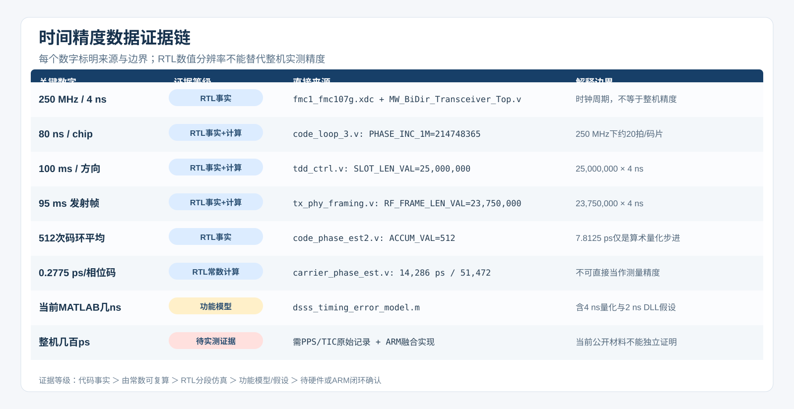

目前最关键的结论：现有RTL已包含4 ns粗时标、512次码环平均、码NCO残差观测、载波相位跨周平均、粗细时间融合和四时间戳双向计算。这些结果证明精测算法与接口能够综合和仿真通过，仍不能独立证明AD9361整机达到几百ps。最终验收还缺细相位基准标定、确定性延时、链路不对称校准和两站PPS/TIC原始记录。
测量路径说明：码环相关、鉴相、NCO校正和码相位平均均在FPGA RTL/IP内完成；ARM不参与码环精度形成，仅可能承担配置、状态读取和系统管理。
ARTL直接事实
B由RTL常数可复算
CRTL/IP分段仿真
D功能模型或假设
E / U实测 / 待确认

逐项核对表
| 数字或说法 | 等级 | 来源 | 复算方法 | 能证明到哪里 |
|---|---|---|---|---|
| 250 MHz DSP时钟、4 ns/拍 | A · RTL直接事实 | fmc1_fmc107g.xdc:176；MW_BiDir_Transceiver_Top.v:790-791 | XDC定义4.000 ns周期，TDD控制器使用该时钟。 | 只能证明时钟拍长。 |
| 80 ns/码片 | B · RTL常数推导 | code_loop_3.v:50-51 | 32位NCO步进214748365≈2^32/20，所以约20个250 MHz时钟产生一码片：20×4 ns=80 ns。 | 可解释整码片跳变；不能单独证明现场80 ns根因。 |
| 每方向100 ms | B · RTL常数推导 | tdd_ctrl.v:35；MW_BiDir_Transceiver_Top.v:790-791 | 25,000,000×4 ns=100 ms。 | 当前_100ms工程与AD9361适配默认值；旧500 ms版本需旧bitstream/分支佐证。 |
| 有效发射帧95 ms | B · RTL常数推导 | tx_phy_framing.v:73 | 23,750,000×4 ns=95 ms，剩余约5 ms属于时隙边界余量。 | 不代表空口实际占用已由仪器验证。 |
| 代码环先丢100次、再平均512次 | A · RTL直接事实 | code_phase_est2.v:46,49,292；time_diff_cal.v:292,340 | 累加结果左移7位形成Q16均值，再乘4 ns并取[47:16]。单个累加计数对应4 ns/512=7.8125 ps。 | 7.8125 ps是算术表示步进，不是系统精度。噪声、偏差、多径和环路误差仍存在。 |
| 真实RTL码环理想残差8.018 ps | C · RTL/IP分段测量 | rtl_stage08_dll_tracking.csv；rtl_stage08_dll_phase_sweep.csv；rtl_stage21_dll_precision.png | 真实扫相测得零点附近鉴相S曲线斜率0.02494/ns；稳定后的鉴相残差约0.0002，按同一斜率换算得到8.018 ps。 | 证明无噪声、无多径理想输入下的数字码环段残差；不是70 km外场PPS精度。 |
| 载波相位0.2775 ps/码 | B · RTL常数推导 | carrier_phase_est.v:48,68,89 | 70 MHz周期常数14,286 ps；相位满周51,472码时，14,286/51,472≈0.27755 ps/码；实现比例2273/8192≈0.27747 ps/码。 | 这是相位码比例。当前carrier_phase_est最终time_diff端口在phy_rx_chn1.v:399未接出。 |
| 当前MATLAB图为几ns | D · 功能模型/假设 | dsss_timing_error_model.m:12,15,52；dsss_tuning_schema.m:53,56 | 模型明确把时标量化为4 ns，并采用DLL抖动2 ns@20 dB的可调假设，所以输出自然处于ns量级。 | 它用于故障机理与参数趋势，不是最终几百ps精度预测。 |
| 整机几百ps | E/U · 实测待入库 | 用户/同事描述；需PPS对比仪或TIC原始记录、测试条件、FPGA固件版本 | 必须用两站PPS实测统计、校准方法、样本数和设备精度支持。 | 当前公开图册没有足够原始实测证据，暂不写成已验证结论。 |
| 精测链是否已进入新RTL | C · RTL/IP分段仿真 | code_loop_3.v；code_nco_residual_time.v；carrier_phase_fine_estimator.v；precision_timestamp_fuser.v；dsss_two_way_offset_avg.v | 码NCO残差和细相位已引出到96端口模型顶层；Xsim验证残差换算、跨周平均、粗细融合、350 ps双向钟差及坏交换拒绝；66个既有IP模型顶层展开0错误。 | 证明算法和接口已实现；细相位物理基准、寄存器配置核对、PPS执行和整机校准仍待硬件完成。 |
| PPS可调步进 | A/B · RTL事实与推导 | MW_BiDir_Transceiver_Top.v:646-702；gen_pps_adjust.v；arm_fsmc_config.v:881,891-892 | 当前顶层使用100 MHz时钟驱动PPS调整，因此命令步进为10 ns。 | 几百ps可能描述稳定度/重复性或测量残差；不能等同于PPS数字调整步进。 |
同事可以据此采用的表述
- 当前工程每方向时隙是100 ms，有效发射帧参数是95 ms；500 ms常数出现在部分FFT捕获等待参数中，不能当作当前发射时隙。
- 80 ns对应一个12.5 Mcps码片，可由NCO常数复算，也与相邻相关峰跳一个码片的现象量级一致。
- 码环512次平均使算术量化步进达到7.8125 ps，但精度仍由噪声、系统偏差、多径和环路稳定性决定。
- 真实code_loop_3及生成IP的分段仿真已测得：2.40 ms进入±50 ps，稳态等效残差/RMS为8.018 ps，本次80 ns整码片跳变为0；该结论仅适用于理想数字输入。
- “几百ps”必须写成已报告的硬件测量结果或目标值，直至补入原始PPS/TIC数据、仪器型号、门限、样本量和校准过程。
- 新AD9361 RTL已显式引出码NCO残差和细相位，并实现粗细融合与四时间戳平均；原690T最终输出未接细相位的问题已在适配层补上。
- AD9361零中频不能直接沿用旧70 MHz的14.286 ns周期；必须选定并标定细相位参考后，才能把RTL通过提升为整机几百ps结论。
下一份有效证据应包含
两站PPS同时送入时间间隔计数器或示波器，记录设备型号与时间基准、连续样本、均值/标准差/峰峰值、是否剔除80 ns跳变、正反向链路配置、FPGA固件版本与参数快照。这样“几百ps”才从口头信息变成可复查的整机证据。